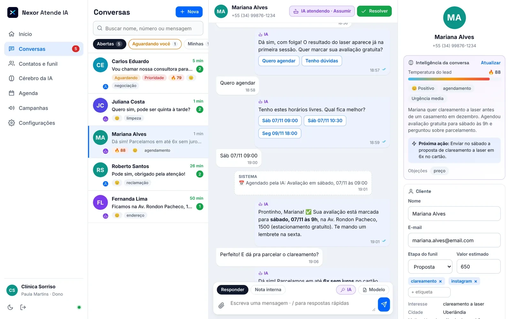
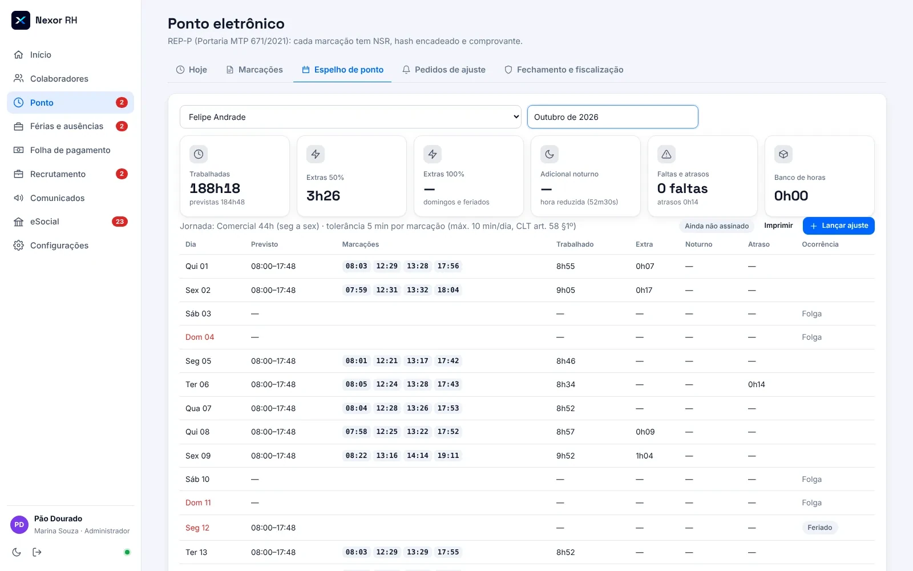
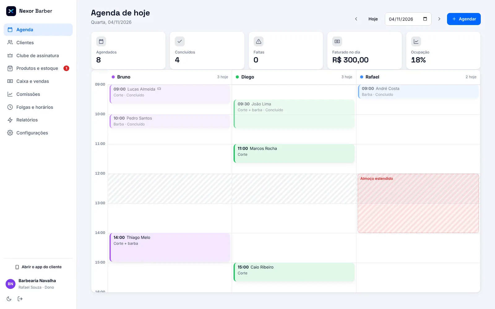
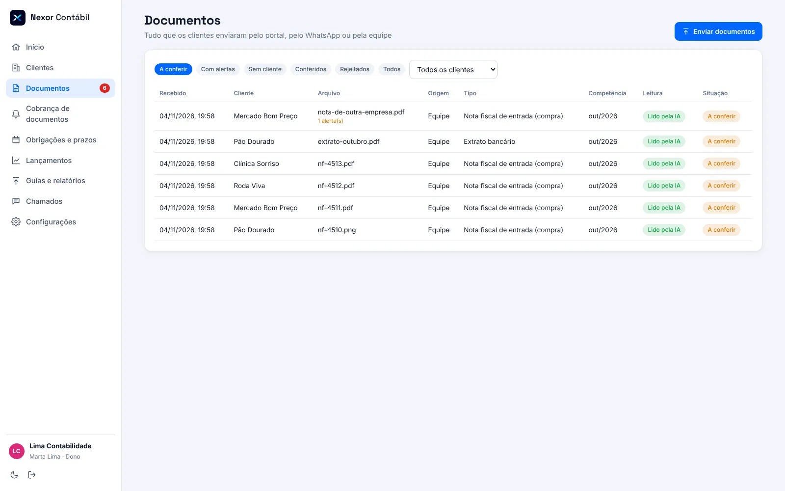
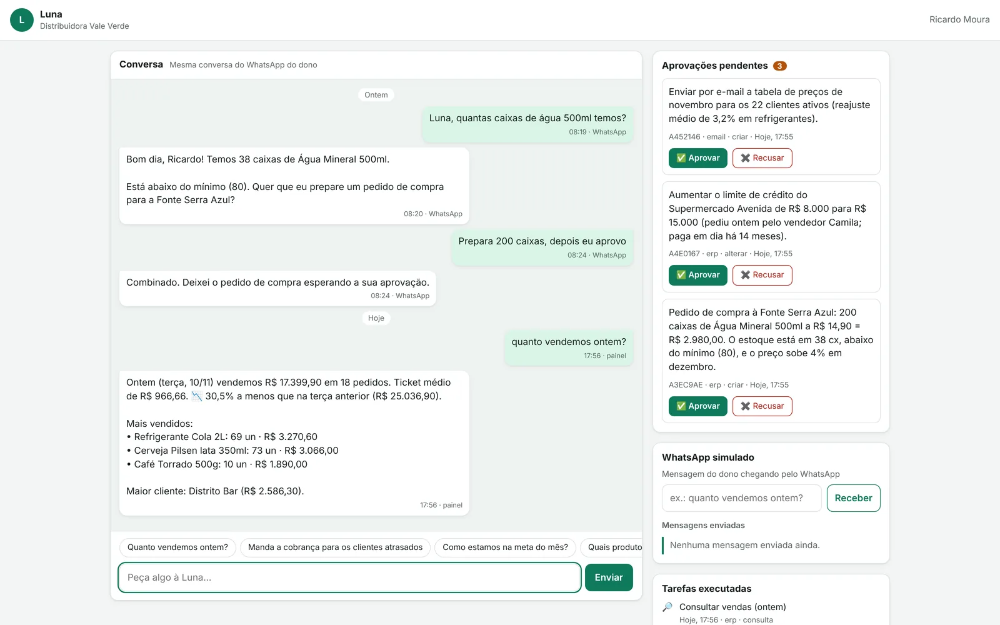
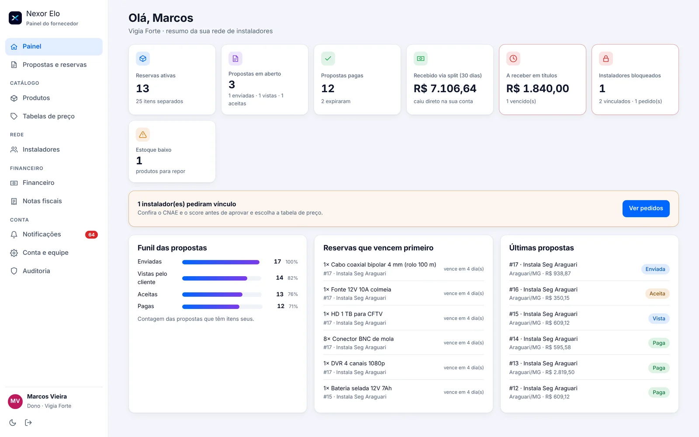

Escolha o seu negócio e veja a IA da Nexor trabalhando nele.
Sistemas com inteligência artificial para empresas de todo o Brasil, feitos em Araguari (MG). 30 dias para testar, implantação junto com o nosso time e os seus dados no seu ambiente.
Qual é o seu negócio?
Sem cartão de crédito. Valores com um atendente no WhatsApp.
Enquanto você lê, a IA da Nexor pode estar:
- respondendo um paciente às 23h47 e marcando a consulta
- lendo uma nota fiscal enviada pelo WhatsApp
- avisando o barbeiro que a lista de espera preencheu o horário
- fechando o espelho de ponto do mês
- mostrando ao vendedor qual cliente está pronto para comprar
- cobrando os documentos que faltam para o contador
- montando o orçamento do instalador com o estoque da loja
- resumindo as vendas de ontem no WhatsApp do dono
- Brasil inteiroFeito em Araguari (MG), com implantação online para todo o país e visita na região.
- 30 dias para testarSem cartão. Você decide depois de ver funcionando.
- Seus dados com vocêO sistema roda no seu ambiente ou na nossa nuvem, com backup diário.
- Gente de verdadeA IA faz o trabalho pesado. Quem cuida de você tem nome e WhatsApp.
Um sistema para cada tipo de negócio.
Cada produto nasceu de um problema real de empresas como a sua. Escolha o seu, teste por 30 dias e fale com um atendente para saber os valores.
-
Nexor Atende IAClínicas, lojas, imobiliárias e quem vive no WhatsApp
Responde o WhatsApp 24 horas com as suas regras, agenda, confirma e passa para a sua equipe com o resumo pronto. Mostra quem está pronto para comprar.

-
Nexor RH e PontoEmpresas com equipe, do comércio à indústria
Ponto pelo celular com rosto, digital, QR Code ou GPS, dentro da Portaria 671. Espelho, banco de horas, folha, eSocial e holerite no app.

-
Nexor BarberBarbearias de um a doze barbeiros
App de agendamento com a marca da sua barbearia, lembrete, lista de espera, clube de assinatura, comanda, comissões e caixa. Sem taxa de implantação.

-
Nexor ContábilEscritórios de contabilidade
Cobra os documentos dos clientes pelo WhatsApp, lê notas e extratos com IA e entrega os lançamentos prontos para você conferir.

-
Nexor AgenteDonos que querem a empresa no WhatsApp
Pergunte pelo WhatsApp e receba vendas, estoque, cobranças e metas do seu sistema. A IA prepara as ações e só executa com a sua aprovação.

-
Nexor EloLojas de material elétrico, segurança, solar e refrigeração
O instalador monta o orçamento com o seu estoque, o cliente paga por um link e o dinheiro cai dividido na hora. Vagas de fundador para as primeiras lojas.

Tem uma equipe de TI? Conheça o Service Desk, o cofre de senhas e o inventário de TI.
Os sistemas Nexor conversam entre si.
A maioria das empresas usa um sistema para cada coisa, e ninguém conversa com ninguém. Na Nexor, o que acontece em um sistema chega pronto no outro, e a Blue enxerga tudo.
Passe o mouse ou toque em um sistema
Veja para onde vão os dados de cada um.
O que a Nexor está criando agora.
Ideias exclusivas da Nexor, já em desenvolvimento. Veja as prévias e entre na lista para ser avisado no lançamento, com condição especial para os primeiros clientes.
Prévias dos produtos em desenvolvimento, com dados fictícios. Recursos e nomes podem mudar até o lançamento.
Tudo o que fazemos para você passa por uma banca de teste de intrusão.
Antes de chegar na sua empresa, cada sistema é atacado de propósito, com foco em encontrar e eliminar qualquer risco: dados expostos, acessos indevidos, falhas e erros de uso. Só libera depois de corrigido.
- Tentativa de invasãotentamos entrar sem senha, ver dados de outra empresa e burlar acessos
- Proteção dos seus dadosconferimos criptografia, senhas, backups e o que fica guardado
- Uso real, com erroscliques repetidos, campos vazios, celular com internet ruim
- Revisão do códigolinha por linha, atrás de erros de lógica e brechas
- Laudo e correçõescada risco encontrado é corrigido e testado de novo antes da entrega
Do primeiro contato ao sistema rodando na sua empresa.
Conversa rápida
Pelo WhatsApp, por vídeo ou numa visita na região de Araguari. Entendemos como a sua empresa trabalha hoje.
Teste de 30 dias
O sistema roda com os dados da sua empresa, sem cartão, com o nosso time ajudando a configurar.
Implantação junto
Cadastramos a equipe, treinamos quem vai usar e deixamos tudo no seu jeito.
Acompanhamento
Suporte com gente de verdade, atualizações e backup, de qualquer lugar do Brasil.
A IA trabalha. A nossa equipe cuida de você.
Muita empresa tem medo de ficar sozinha com um robô. Aqui é o contrário: a tecnologia tira o trabalho repetitivo e um time de verdade acompanha cada cliente, em qualquer lugar do Brasil.
- Atendimento com nome. Você fala com quem implantou o seu sistema, pelo WhatsApp.
- Seus dados com você. No seu servidor ou na nossa nuvem, com backup diário e LGPD.
- Feito para a sua realidade. Configuramos com as regras e o jeito da sua empresa.
Ficou com dúvida? Pergunte à Blue.
A Blue é a nossa assistente de IA. Ela entende o seu negócio, indica o sistema certo e chama um atendente quando você quiser.
Precisa de algo que ainda não existe?
Também fazemos sob medida, com o código entregue para a sua empresa.
- Sites e landing pages rápidos e prontos para o Google
- Loja virtual Pix, cartão, boleto e marketplaces
- ERP e CRM financeiro, vendas, estoque e NF-e
- Automação com IA documentos, relatórios e cobranças
- Software sob medida apps, plataformas e integrações
- Consultoria de LGPD mapeamento, políticas e treinamento
// dúvidas frequentes
Perguntas frequentes
Não encontrou o que procurava? Fale com um atendente pelo WhatsApp.
Tirar dúvida no WhatsAppComo funciona o teste grátis de 30 dias?
Escolha uma solução, faça um pré-cadastro rápido e use a demonstração na hora, sem cartão de crédito. Quer testar com os dados da sua empresa? A Nexor ativa o sistema no seu ambiente por 30 dias grátis, com algumas funções limitadas (por exemplo, número de colaboradores ou de conversas da IA) e o nosso time acompanhando você. Depois dos 30 dias, o sistema continua só com um plano contratado, e os seus dados ficam guardados.
Quem é a Blue?
A Blue é a assistente de inteligência artificial da Nexor. Ela tira dúvidas, indica a solução certa para o seu caso e já encaminha você para um especialista. É só clicar em "Fale com a Blue" no canto da tela.
Como funciona o atendimento com IA no WhatsApp?
Usamos a API oficial do WhatsApp e um agente de IA treinado com as informações da sua empresa. Ele responde clientes, tira dúvidas, consulta estoque ou agenda e registra tudo no seu sistema. Quando a conversa exige uma pessoa, ele transfere para sua equipe com o histórico completo.
Quanto custa um projeto?
Depende do escopo, do porte e das integrações. Por isso começamos com um diagnóstico gratuito: entendemos o processo, estimamos o retorno e apresentamos uma proposta clara, por etapas.
Em quanto tempo vejo retorno com IA?
Definimos os indicadores antes de começar (tempo de resposta, horas poupadas, conversão) e priorizamos os processos de retorno mais rápido. Você acompanha os resultados em um painel desde as primeiras entregas.
Quanto tempo leva para desenvolver um projeto?
Depende do escopo. Sites e landing pages costumam levar algumas semanas; sistemas empresariais e automações com IA são entregues em módulos, com versões funcionais desde as primeiras sprints.
Os modelos da vitrine podem ser personalizados?
Sim. Os modelos são pontos de partida: adaptamos identidade visual, fluxos, regras de negócio e integrações para a realidade da sua empresa.
O código-fonte fica com a minha empresa?
Sim. Em projetos sob medida o código e a documentação são entregues para você, sem aprisionamento tecnológico.
Como a IA é aplicada no meu negócio?
Mapeamos processos repetitivos — atendimento, leitura de documentos, triagem de leads, relatórios — e criamos agentes que executam essas tarefas integrados aos seus sistemas, com supervisão humana quando necessário.
Meus dados ficam seguros com a IA?
O sistema roda no ambiente da sua empresa e usa provedores de IA com garantias corporativas, contratados na conta da sua empresa. Enviamos à IA só o necessário, com controle de acesso e anonimização quando cabível. Para grandes empresas, há opção de modelos privados.
Onde ficam os dados da minha empresa?
No ambiente da sua empresa. Todo sistema da Nexor é implantado no seu servidor físico ou na conta de nuvem da sua empresa (AWS, Azure, Google Cloud ou outra). A Nexor não guarda os dados dos seus clientes e colaboradores.
Quem é responsável pela LGPD?
A sua empresa, como controladora dos dados que o sistema trata. Nossos sistemas trazem recursos que ajudam na adequação (controle de acesso, criptografia, registro de auditoria), e a Nexor oferece consultoria de LGPD como serviço à parte: mapeamento de dados, políticas, contratos e treinamento.
Vocês dão suporte depois da entrega?
Sim. Oferecemos planos de suporte, monitoramento e evolução contínua, com SLA de acordo com a criticidade do sistema.
Veja o sistema rodando na sua empresa antes de decidir.
Teste por 30 dias, sem cartão. Para saber os valores, um atendente da Nexor te responde no WhatsApp.